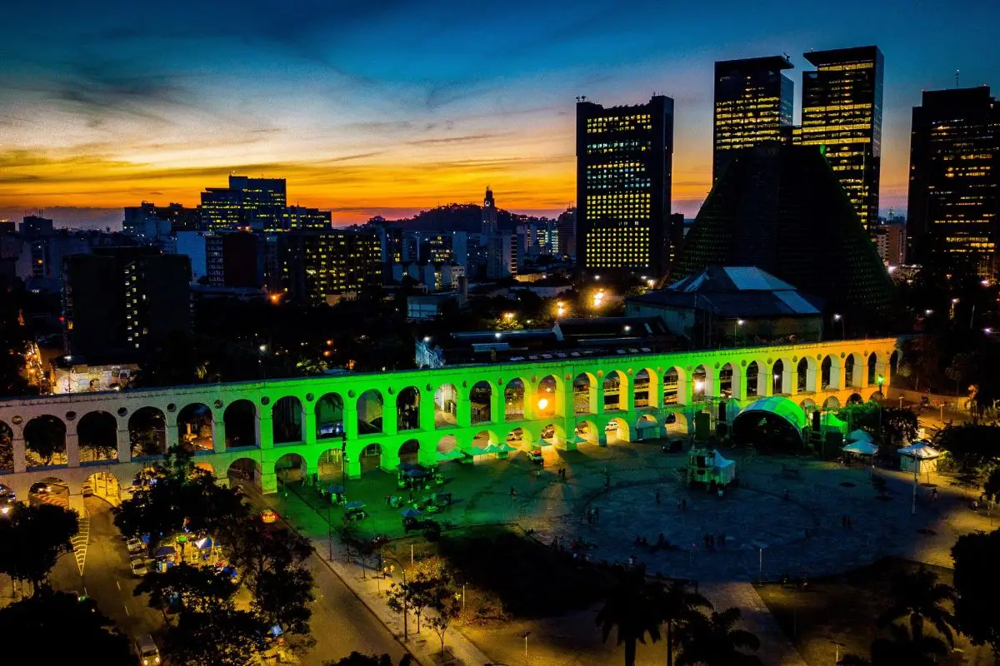
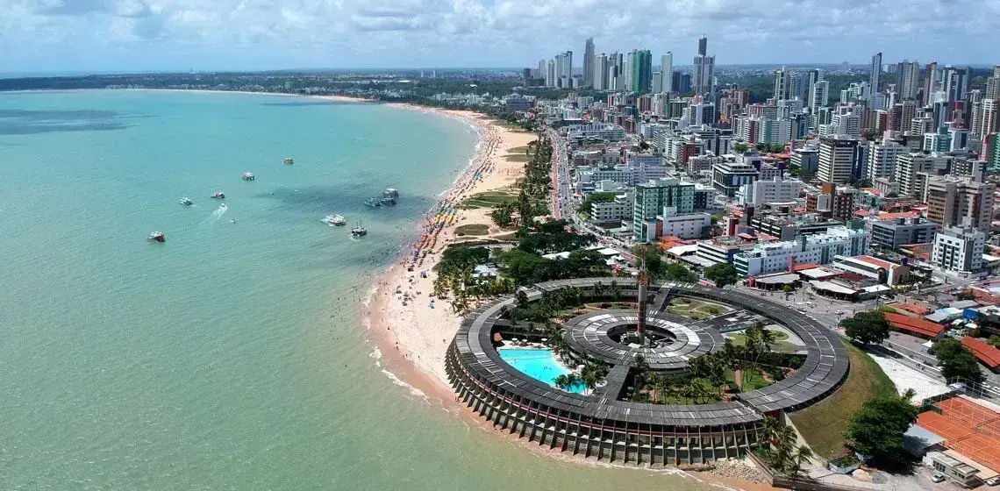

Arcos da Lapa - Rio de Janeiro, Brasil
Um dos cartões-postais mais famosos do Rio de Janeiro, os Arcos da Lapa encantam com sua arquitetura colonial. À noite, o local ganha vida com bares, música e muita cultura.

Maceió - Alagoas, Brasil
As praias de Maceió surpreendem pela beleza natural, com águas cristalinas e coqueirais que desenham a paisagem. É o destino perfeito para relaxar e aproveitar o sol.

João Pessoa - Paraíba, Brasil
Em João Pessoa, as praias oferecem um espetáculo de tranquilidade e natureza preservada. O pôr do sol na cidade é considerado um dos mais bonitos do Brasil.